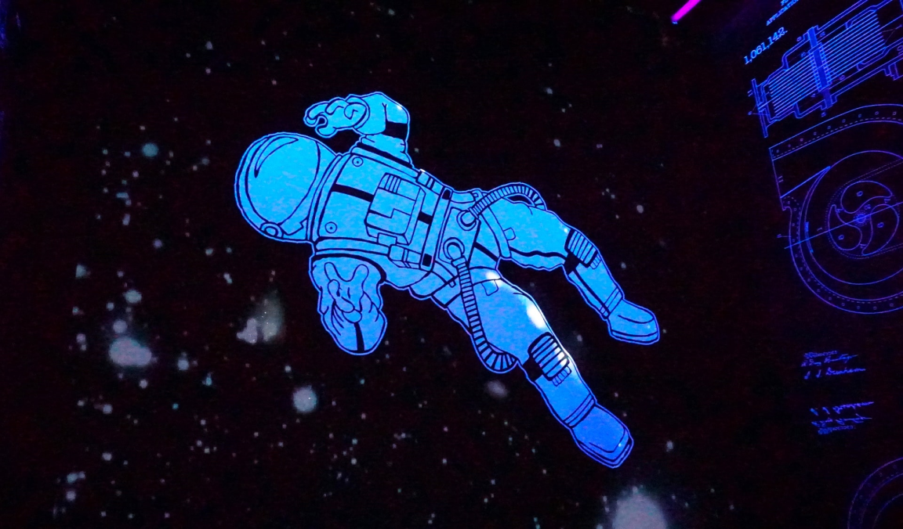

L’exploration spatiale est un sujet très discuté présentement grâce avec les nouvelles d’exploration spatiale et même de tourisme spatial présenté par plusieurs millionnaires tels que Jeff Bezos et Elon Musk. Beaucoup parlent d’aller sur mars, mais est-ce humainement possible? Malheureusement, un voyage sur mars serait très demandant sur le corps humain. Un voyage de 9 mois (pour aller sur mars) atrophie les muscles et rend les os plus souples. Voici où pourrait rentrer en jeu la génétique : un véhicule capable de mieux adapter l’humain à des conditions extrêmes.
Scott Kelly, astronaute à la NASA, à comme rôle de tester l’effet de nombreuses conditions spéciales sur le corps humain. Par exemple, en 2016, il est resté dans l’espace pendant 360 jours. Quand il est revenu sur terre, sa peau brûlait à cause du changement de gravité. Ceci amené des chercheurs à s’interroger sur comment modifier le corps humain pour l’adaptation à l’espace.
Grâce à Scott Kelly, et son frère jumeaux, il a été possible d’isoler certaines caractéristiques propices au voyage spatiale : une structure osseuse plus dense pour résister à l’étirement, un rythme cardiaque adapter à une pression plus basse, un système immunitaire propice en microgravité, etc.
Peut-être même que dans 500 ans, l’humain sera capable de vivre dans l’espace sans conséquences, ce qui est une solution à la surpopulation ou au manque de ressources sur Terre.
L’humain de l’espace est-il l'humain du futur?
Entrée par Alexis Ramon
Référence : TAYLOR, Ian « Biological space race: NASA doctor reveals the future of genetically edited astronauts » Science Focus , 6 août 2021, URL: https://www.sciencefocus.com/space/space-exploration-gene-editing-astronauts/ (consulté le 2 novembre 2021)